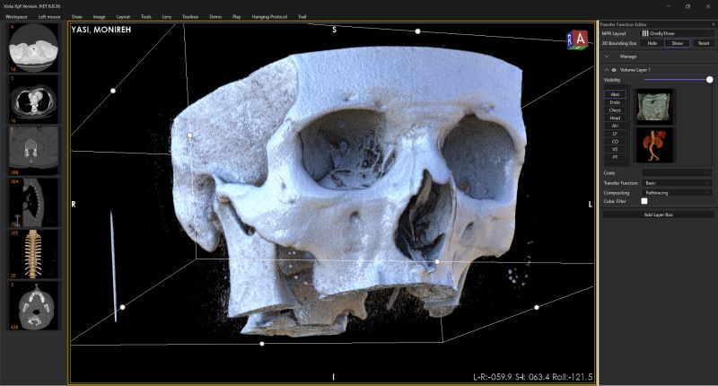

July 2026 · MiNNOVAA ZEUS
OpenGL Rendering Engine for ZEUS
A new cinematic rendering engine for ZEUS, MiNNOVAA’s imaging workstation. It keeps an OpenGL 3.3 Core profile and ObjectTK abstractions for GPU resources, so the same path runs on the workstation GPUs already in the field.
Rays walk the volume with stochastic volumetric free-flight sampling. Hits respond with diffuse and GGX materials, lit by an HDR environment, then accumulate progressively. Transfer functions drive extinction; 3D volume textures feed the march; active-tile filtering skips settled tiles so interaction stays responsive.
Inspired by Mikhail Gorobets’ volume path-tracing work. Original LinkedIn post
- OpenGL 3.3
- GLSL 330
- Path tracing
- GGX
- HDR IBL
- ObjectTK
- Transfer functions
- Active-tile filtering